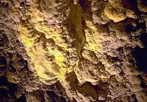

| In Deutsch |
| In Deutsch |
Moonmilk
|  |
Image: moonmilk in the
 Schulerloch Schulerloch |
en: moonmilk
de: Bergmilch (e); Mondmilch (Mont-) (e)
es: leche de luna (f)
fr: mondmilch (m)
hu: montmilch
it: latte (sm) di monte
pt: leite de lua
ro: montmilch (n)
 |
| Image: moonmilk in the
Charlottenhöhle |
Moonmilk is a speleothem consisting primarly of calcite, but may also contain hydrocalcite, hydromagnesite or huntite. Typically it looks like other dripstones, but it is soft and spongy, sometimes even viscous or liquid. The deposits are generally of a pure white and look cloudy, which explains the association with milk. The association with the Moon is based on the Medieval belief, that the rays of celestial bodies may condense on Earth. There were actual speculations that the pure white mineral is petrified moonlight.
Moonmilk forms crusts on walls and floors, sometimes stalactites and stalagmites. It is formed by the deposition of calcite and other minerals from the dripping water, but unlike the crystals of sinter, those crystals are loosely connected rods of 1 x 8 micrometers. Many kinds of moonmilk can be connected with the work of microorganisms, mostly Macromonas bipunctata, actinomycetes and algae.
Numerous caves were named after the moonmilk, which is found inside, like the Mondmilchloch at the Pilatus mountain, Switzerland, or the Mondmilchhöhle near Lenningen-Gutenberg, Germany. A few years ago a discovery in a Basque cave became world famous, a 300m long river consisting of moonmilk.
The term Mondmilch is of German origin, originally coined by the Swiss naturalist Conrad Gesner (1516-1565). In his description of the Swiss Apls from 1555 he describes the Pilaus Mountain in the Emmental Alps, and the Mondmilchloch cave on the mountain. In the Latin text he describes Lac Lunae or Mondmilch. As this is the first description, Mondmilchloch is type locale of the moonmilk. The German term Mondmilch is used in several languages as a foreign word, in English the translation moonmilk is used.
Moonmilk was dscribed as a remedy by Gesner in 1555. Like many other cave contents like bear bones or dripstones, moonmilk was mined and sold by pharmacies. It was prescibed until the 19th century. As it is simply calcite, it definitely cured acalcinosis and probably cardialgia by neutralicing the acid. And it definitely had no adverse effects, except on the purse of the customer and of course the cave.
 Honeycomb Cave
Honeycomb Cave- Nakimu Caves
- Nidlenloch
- Zelške jame
- Allander Tropfsteinhöhle
- Cueva de Castañar
- Giants Cave
- Harmanecká Jaskyna
- Hurricane River Cave
- Maximiliansgrotte
- Nixhöhle
- Rákóczi-barlang
- Großes Schulerloch
- Sloupsko-Šošùvské jeskyně
- Jeskyně Na Turoldu
- See also
 Search Google for "Moonmilk"
Search Google for "Moonmilk" Moonmilk - Wikipedia
(Fri Mar 25 2011 14:08:58 GMT+0100)
Moonmilk - Wikipedia
(Fri Mar 25 2011 14:08:58 GMT+0100) Macromonas bipunctata
(Fri Mar 25 2011 14:09:27 GMT+0100)
Macromonas bipunctata
(Fri Mar 25 2011 14:09:27 GMT+0100)- The Virtual Cave: Moonmilk
(Fri Mar 25 2011 14:09:34 GMT+0100)
- The Original Moonmilk
(Fri Mar 25 2011 14:13:08 GMT+0100)
- KCAW - Public Radio in Sitka, Alaska - Local News
(Fri Mar 25 2011 14:24:18 GMT+0100)